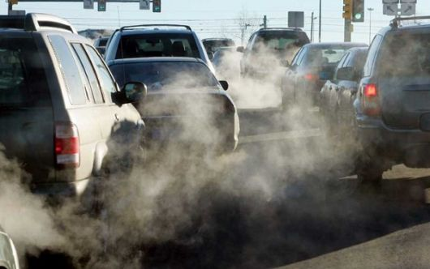
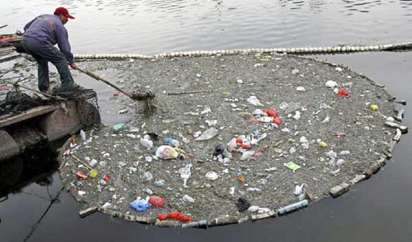
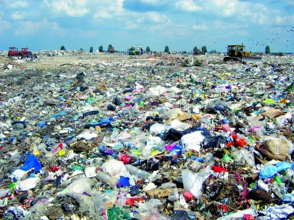

1. Chișinău |
Nivelul poluării: Foarte înalt (8/10) |
2. Tiraspol |
Nivelul Poluării : Foarte înalt (6/10) |
3. Bălți |
Nivelul poluării : Înalt (5/10) |
4. Tighina |
Nivelul poluării : înalt (4.5/10) |
5. Rîbnița |
Nivelul poluării : înalt (4/10) |